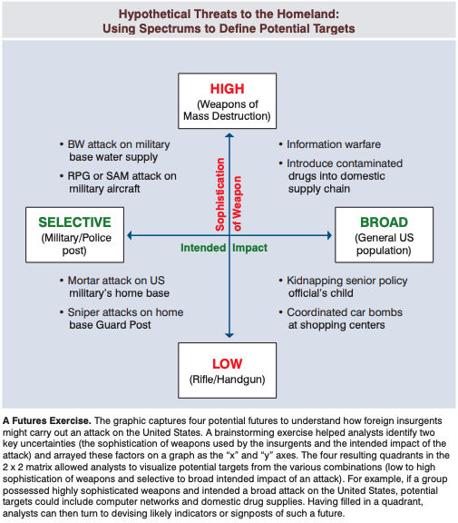

This is a place for me to take notes and review longer texts, books, and posts. The contents are a mix of copy-and-pasted text from the source, as well as my own thoughts. I do not distinguish between the two. See the original source text for what is direct and what I wrote myself.
Blockquotes (see below for example) are essentially direct quotes. For example, if the quote says "In our lives, we are constantly ...", I will shorten it to "We are constantly ...". No information is lost, but the note is shorter for reference and typing. Anything in [square brackets like this] is my personal note.
This is a blockquote example.
These are a list of heuristics and questions I use.
I read this book before beginning practicing meditation due to the results niplav had.
We categorize experiences. We try to stick each perception, every mental change in this endless flow, into one of three mental pigeon holes: it is good, bad, or neutral. Then, according to which box we stick it in, we perceive with a set of fixed habitual mental responses. If a particular perception has been labeled “good,” then we try to freeze time right there. We grab onto that particular thought, fondle it, hold it, and we try to keep it from escaping.When that does not work, we go all-out in an effort to repeat the experience that caused the thought. Let us call this mental habit “grasping.”
Over on the other side of the mind lies the box labeled “bad.” When we perceive something “bad,” we try to push it away. We try to deny it, reject it, and get rid of it any way we can.We fight against our own experience. We run from pieces of ourselves. Let us call this mental habit “rejecting.” Between these two reactions lies the “neutral” box. Here we place the experiences that are neither good nor bad. They are tepid, neutral, uninteresting.We pack experience away in the neutral box so that we can ignore it and thus return our attention to where the action is, namely, our endless round of desire and aversion. So this “neutral” category of experience gets robbed of its fair share of our attention. Let us call this mental habit “ignoring.”
“Suffering” is a big word in Buddhist thought...The Pali word is dukkha, and it does not just mean the agony of the body. It means that deep, subtle sense of dissatisfaction that is a part of every mind moment and that results directly from the mental treadmill. The essence of life is suffering, said the Buddha.
Take any moment when you feel really fulfilled and examine it closely. Down under the joy, you will find that subtle, all-pervasive undercurrent of tension that no matter how great this moment is, it is going to end. No matter how much you just gained, you are inevitably either going to lose some of it or spend the rest of your days guarding what you have and scheming how to get more. And in the end, you are going to die; in the end, you lose everything. It is all transitory.
Underneath lies another perspective...a level of functioning in which the mind does not try to freeze time, does not grasp onto our experience as it flows by, and does not try to block things out and ignore them. It is a level of experience beyond good and bad, beyond pleasure and pain. It is a lovely way to perceive the world, and it is a learnable skill.
You have to see who you are and how you are without illusion, judgment, or resistance of any kind. You have to see your place in society and your function as a social being. You have to see your duties and obligations to your fellow human beings, and above all, your responsibility to yourself as an individual living with other individuals. And finally, you have to see all of that clearly as a single unit, an irreducible whole of interrelationship.
Buddhism does not advocate faith in the sense of believing something because it is written in a book, attributed to a prophet, or taught to you by some authority figure. The meaning of faith here is closer to confidence. It is knowing that something is true because you have seen it work, because you have observed that very thing within yourself. In the same way, morality is not a ritualistic obedience to a code of behavior imposed by an external authority. It is rather a healthy habit pattern that you have consciously and voluntarily chosen to impose upon yourself because you recognize its superiority to your present behavior.
Meditation changes your character by a process of sensitization, by making you deeply aware of your own thoughts, words, and deeds.
All meditation procedures stress concentration of the mind, bringing the mind to rest on one item or one area of thought. Do it strongly and thoroughly enough, and you achieve a deep and blissful relaxation, called jhana. It is a state of such supreme tranquillity that it amounts to rapture, a form of pleasure that lies above and beyond anything that can be experienced in the normal state of consciousness. Most systems stop right there. Jhana is the goal, and when you attain that, you simply repeat the experience for the rest of your life.
you will become more and more attuned to your own emotional changes. You will learn to know yourself with ever greater clarity and precision.
There are three integral factors in Buddhist meditation—morality, concentration, and wisdom. These three factors grow together as your practice deepens. Each one influences the other, so you cultivate the three of them at once, not separately. When you have the wisdom to truly understand a situation, compassion toward all parties involved is automatic, and compassion means that you automatically restrain yourself from any thought, word, or deed that might harm yourself or others; thus, your behavior is automatically moral.
Meditation is running straight into reality. It does not insulate you from the pain of life but rather allows you to delve so deeply into life and all its aspects that you pierce the pain barrier and go beyond suffering. Vipassana is a practice done with the specific intention of facing reality, to fully experience life just as it is and to cope with exactly what you find. It allows you to blow aside the illusions and free yourself from all the polite little lies you tell yourself all the time. What is there is there. You are who you are, and lying to yourself about your own weaknesses and motivations only binds you tighter to them. Vipassana meditation is not an attempt to forget yourself or to cover up your troubles. It is learning to look at yourself exactly as you are to see what is there and accept it fully. Only then can you change it.
All Buddhist meditation aims at the development of awareness, using concentration as a tool toward that end.
Conscious thought is tightly connected with self-concept. The self-concept or ego is nothing more than a set of reactions and mental images that are artificially pasted to the flowing process of pure awareness.
Vipassana is a direct and gradual cultivation of mindfulness or awareness. It proceeds piece by piece over a period of years. One’s attention is carefully directed to an intense examination of certain aspects of one’s own existence. The meditator is trained to notice more and more of the flow of life experience. Vipassana is a gentle technique, but it also is very, very thorough. It is an ancient and codified system of training your mind, a set of exercises dedicated to the purpose of becoming more and more aware of your own life experience. It is attentive listening, mindful seeing, and careful testing. We learn to smell acutely, to touch fully, and really pay attention to the changes taking place in all these experiences. We learn to listen to our own thoughts without being caught up in them.
The object of vipassana practice is to learn to see the truths of impermanence, unsatisfactoriness, and selflessness of phenomena.
Vipassana is a form of mental training that will teach you to experience the world in an entirely new way. You will learn for the first time what is truly happening to you, around you, and within you. It is a process of self-discovery, a participatory investigation in which you observe your own experiences while participating in them. The practice must be approached with this attitude: “Never mind what I have been taught. Forget about theories and prejudices and stereo types. I want to understand the true nature of life. I want to know what this experience of being alive really is. I want to apprehend the true and deepest qualities of life, and I don’t want to just accept somebody else’s explanation. I want to see it for myself.”
The whole meaning of the word vipassana is looking into something with clarity and precision, seeing each component as distinct, and piercing all the way through to perceive the most fundamental reality of that thing. This process leads to insight into the basic reality of whatever is being examined. Put these words together and vipassana bhavana means the cultivation of the mind toward the aim of seeing in the special way that leads to insight and full understanding.
We train ourselves to see reality exactly as it is, and we call this special mode of perception mindfulness.
Vipassana meditation teaches us how to scrutinize our own perceptual process with great precision. We learn to watch the arising of thought and perception with a feeling of serene detachment. We learn to view our own reactions to stimuli with calmness and clarity. We begin to see ourselves reacting without getting caught up in the reactions themselves. The obsessive nature of thought slowly dies.
Don't expect anything. Just sit back and see what happens. Treat the whole thing as an experiment. Take an active interest in the test itself. But don't get distracted by your expectations about results. For that matter, don't be anxious for any result whatsoever.
Don't strain: Don't force anything or make grand exaggerated efforts.
Don't rush: There is no hurry, so take you time. Settle yourself on a cushion and sit as though you have a whole day.
Don't cling to anything and don't reject anything: Let come what comes and accommodate yourself to that, whatever it is.
Let go: Learn to flow with all the changes that come up. Loosen up and relax.
Accept everything that arises: Accept your feelings, even the ones you wish you did not have. Accept your experiences, even the ones you hate.
Be gentle with yourself: Be kind to yourself.
Investigate yourself: Question everything...Subject all statements to the actual test of your experience and let the results be your guide to truth.
View all problems as challenges: Look upon negatives that arise as opportunities to learn and to grow.
Don't ponder: ... All that is necessary is a clear, non-conceptual perception of what they are and how they work. That alone is sufficient to dissolve them. Concepts and reasoning just get in the way. Don't think. See.
Don't dwell upon contrasts: [don't compare yourself to others.]
The following quote seems to be the essence of the book itself, and for that it is in bold:
When the meditator perceives any sensory object, he is not to dwell upon it in the ordinary egotistical way. He should rather examine the very process of perception itself. He should watch the feelings that arise and the mental activities that follow. He should note the changes that occur in his own consciousness as a result. In watching all these phenomena, the meditator must be aware of the universality of what he is seeing. That initial perception will spark pleasant, unpleasant or neutral feelings. That is a universal phenomenon. It occurs in the mind of others just as it does in his, and he should see that clearly. Following these feelings various reactions may arise. He may feel greed, lust, or jealousy. He may feel fear, worry, restlessness or boredom. These reactions are universal. He simple notes them and then generalizes. He should realize that these reactions are normal human responses and can arise in anybody.
we strongly recommend you start with focusing your total undivided attention on your breathing to gain some degree of shallow concentration.
Seeing with wisdom means seeing things within the framework of our body/mind complex without prejudices or biases springing from our greed, hatred and delusion. Ordinarily when we watch the working of our mind/body complex, we tend to hide or ignore things which are not pleasant to us and to hold onto things which are pleasant. This is because our minds are generally influenced by our desires, resentment and delusion. Our ego, self or opinions get in our way and color our judgment.
Our goal is to reach the perfection of all the noble and wholesome qualities latent in our subconscious mind. This goal has five elements to it: Purification of mind, overcoming sorrow and lamentation, overcoming pain and grief, treading the right path leading to attainment of eternal peace, and attaining happiness by following that path.
Once you sit, do not change the position again until the end of the time you determined at the beginning.
The mind can never be focused without a mental object. Therefore we must give our mind an object which is readily available every present moment. What is present every moment is our breath. The mind does not have to make a great effort to find the breath, for every moment the breath is flowing in and out through our nostrils. As our practice of insight meditation is taking place every waking moment, our mind finds it very easy to focus itself on the breath, for it is more conspicuous and constant than any other object.
As soon as you notice that your mind is no longer on your breath, mindfully bring it back to it and anchor it there.
Earlier in your practice you had inhaling and exhaling as objects of meditation. Now you have the sign as the third object of meditation. When you focus your mind on this third object, your mind reaches a stage of concentration sufficient for your practice of insight meditation. This sign is strongly present at the rims of the nostrils. Master it and gain full control of it so that whenever you want, it should be available. Unite the mind with this sign which is available in the present moment and let the mind flow with every succeeding moment. As you pay bare attention to it, you will see the sign itself is changing every moment. Keep your mind with the changing moments. Also notice that your mind can be concentrated only on the present moment. This unity of the mind with the present moment is called momentary concentration.
I lucid dream (LD) on a fairly regular basis, around 2-5x per week. These notes are for me to increase my LD frequency and how to recognize I am in a dream.
Dream recall seems to be a common suggestion on improving LD. If I LD, I immediately email myself via voice typing in the morning everything I can remember in the dream. This seems to have a positive feedback loop of sorts, where recalling causes a LD the next night, and so on.
StaySharp from Dream Views posted this thread on dream recall. I would currently (09 January 2021) consider myself average or above average in quantity and above average or skilled for quality: I normally have 1-2 dreams per night and can normally recall them, although not necessarily a few days later (although there are a few I remember years later, especially those with things in common with current dreams), and I have longer, more vivid dreams and can recall them in decent detail immediately upon waking.
Mental Setup
The first step to a good recall is being optimistic about your recall, though it might sound trivial and irrelevant to some people at first, it definitely isn't. A generally optimistic mindset about dreaming is something which every experienced dreamer can recommend, it helps improve recall just like a pessimistic mindset will likely decrease it.
Drugs: Generally drugs are bad for dreaming, very bad.
Mantras are very useful for dreaming in general, and as well can be used specific for dream recall. Example mantras for dream recall: "I remember my dreams", "I wake up after each dream and remember it", "I remember my dreams in the morning"
Supportive Techniques
Dream Journal helps in learning to remember dreams, it improves the amount of recalled dreams as well. Generally when you are on Rock Bottom or Average in both quantity and quality you should write down everything you have.
When you get a high level in quantity like advanced or master you might consider voluntarily skipping some dreams to improve the quality of your dreams. Skipping undetailed, uninteresting or undesired dreams decreases the chance of them occurring again. When you get a high level of quality without a high level of quantity I recommend you to still write down as much detail as possible. Only skip details if you simply lack the time, or like mentioned above, they are uninteresting or undesired details.
Sleep/Dreams
Setting up an alarm which wakes you up pleasantly is very important for a good recall, preferably use an alarm which starts silent and gets louder each second.
I simply advise you to pay attention to how your room temperature affects your recall. In my case a room which is too hot for example is able to decrease my recall by more than a heavy 50%, which is a huge impact. A room which is too coldis unlikely to impact me as much, but the cold can make me more lazy which may take out something like 20% of my recall.
sleeping in a really dark room or even using an eye mask can impale recall a lot, judging by my own observations by even up to 80%!
One simple yet effective way to increase your recall is to stay in the bed a few minutes after waking up and thinking about your dreams, try to recall the details and what happened, and get up when you have the feeling you remembered as much as possible.
Reality checks (RC) allow the dreamer to know they are dreaming. I have trouble with this. I basically recognize it's a dream, but can't "flip the switch" in the dream itself to allow me to take control.
DreamView's wiki has a reality check tutorial:
Examine the nature of your current world. Analyze if you feel strange and if the visual field looks normal. Check your cognitive function. Ask yourself "Do I remember things from earlier in this day?" "Do I actually know what day this is and if I should really be here?" "How did I get here, what was I doing 2 hrs ago?"
Some of the best RCs based on ease of practice in a dream and success rate [the following list are "very reliable" methods, I do not include the less reliable]:
- Look at your hands, palms up and notice details. Count your fingers. Do they look normal (color, shape, size, can you make your finger longer?) Do you have the right amount?
- pinch your nose shut with your hand and try to breathe. Fully expect to be able to breathe.
- Try to gently push your thumb through a palm of your other hand. Pay attention to the sensation. Anticipate that it will go through.
- Say, "If this was a dream, I could levitate" and expect to float up. Gently push off and expect to start rising up.
- look at something and try to change it.
My most common dream signs are 1) being with people I barely know or haven't seen in many years, and 2) being in places/landscapes I know do not exist or have not existed for many years.
From this article:
- Inner Awareness - There is something unusual about your own in-dream thoughts, emotions, sensations or perceptions. Example: When I think about lifting off the ground, I start floating upwards into the night.
- Action - Some physical activity seems wrong - either by you, other dream characters, or inanimate objects. Example: As I drive down the road I realize that neither the steering or brakes have any effect on the car's movement.
- Form - The shape or appearance of a person, object or place is unusual. Example: The man has a really small, shrunken head which looks comical sitting upon his massive broad shoulders.
- Context - The situation you're in seems unusual or even impossible and contrary to real life. Example: I'm living in a futuristic Martian colony, and feel as if I have been here for many years.
Lucid affirmation is another common suggestion. Suggestions from this article on MILD (mnemonic induction of lucid dreams):
- Next time I'm dreaming, I will remember I'm dreaming
- The next scene will be a dream
- I will have a lucid dream tonight
- I'm dreaming now
A solid resource on identifying back pain causes and mitigating/eliminating them. McGill begins with an anatomical view of the back, discusses common pains and their causes, provides a self-assessment, and finishes with solutions. I've been performing the McGill Big 3 (plus glute bridge) daily for about 6 months now and my back feels much better.
My only qualm with the book is his tendency to avoid painful exercises. My philosophy is that, yes, you should avoid these for some time, but in the end, they should be strengthened, because you can only avoid it for so long before it occurs again. See improper alignment.
There is a lot of fanatical, mainstream advertising BS included about how he was the magic cure to some people's back pain and so on.
Instead of focusing on title of condition, focus on finding cause of symptoms and addressing them directly as a means to recovery.
Rarely is the targeted tissue [regarding surgery] the only cause of pain. Healthy tissues (and sometimes nerves) are often destroyed during surgery. Risk associated with surgery often do not outweight potential benefits when dealing with cases in which original source of pain is not being addressed.
Lying in bed for excessive periods actually causes back pain. Discs fill with fluid while lying down and push vertebrae away, lengthening the spine. Standing drains them of fluid.
The "stretch reflex" is a neurological phenomenon that reduces pain sensitivity for 15-20 min. Focusing on modifying daily movements and stabilization/control of the spine is a much better solution than stretching (which does have its place).
Three natural spine curves: cervical (neck), skull to neck-torso connection; thoracic (upper back), shoulders to bottom of ribcage; lumbar (lower), bottom of ribcage to tailbone.
Nerves run down main spinal cord with roots exiting at each spinal level. Damage to the spine irritates or pinches nerve roots causing back pain and possibly pain in other parts of the body.
Compression forces squeeze joints and result of muscle force. Shear forces are perpendicular to compression forces and cause joints to rub across one another.
The hips are designed to bend (ball and socket joints) while the spine is a flexible rod that becomes painful with repeated bending.
Train the core to stop motion and train shoudlrs/hips to create motion.
Finding and repeating pain-free motions in your back will cause the remaining painful activities to hurt less.
- Locate and eliminate cause of pain
- Increase consciousness around pain-inducing movements
- Develop replacement postures and movement patterns
- Stabilize torso, core, and spin
- Develop daily exercise that includes walking
- Mobilize hips
- Create power at B&S joints (hips and shoulders)
- Exercise movement patterns: push, pull, lift, carry, lunge, squat, etc.
- Make healthy spine choices when sleeping, sitting, or moving
- Movement that begins from the spin predicts a poor future for back pain
- Certain asymmetries of strength and movement have been shown to be predictive of current or future back troubles
- Stiff hips, particularly one one side is a good predictor of future back hips
- Tight hamstrings are not very predictive of future back pain.
- Torso muscle endurance is a big issue, especially if abs>back
- Pain induced with prolonged sitting and standing usually predicts more intense pain in the future
Essential questions:
- Does pain intensity change?
- Does rolling over in bed give painful "catches"?
- What makes your pain worse?
- Traumatic initial cause of pain?
- History of conditions?
- Pain worst first thing in morning?
- Increase throughout the day?
- Pain concentrated in middle back?
- Pain radiate to butt, legs, or feet?
- Increase or decrease with fast walking?
Avoid immediate strenuous activities after prolonged sitting, stooping, or sleeping.
Walking too slowly statically loads the spine. Muscles add more crushing forces to the spine.
[On why adults shouldn't necessarily deep squat:] Children have disproportionally shorter legs, allowing mechanically-advantaged deep squat. Hips sockets deep to provide stability for load beating when upright, causing a collision of femur and anterior hip socket.
Link: Rules of Thought
Body:
What is the best small set of rules for me to internalize to maximize my rationality without being overwhelmed by details?
Answers:
How could I be wrong about this? What evidence would convince me I'm wrong?
The Law of Social Attribution - If the fundamental attribution error states "We judge others by their actions and ourselves by our intentions" and Hanlon's razor states "Never attribute to malice that which can be explained by ignorance or stupidity" then you arrive at a master ethic for interpersonal relationships: Always be charitable and give the benefit of the doubt to others. That way, you will be more likely to approach a problem with the clarity of thought needed to find a longterm win-win situation for all involved.
The Attrition Principle - If Sturgeon's Law states that "90% of everything is crap" and the Pareto principle generally states "80% of effects come from 20% of causes", then you arrive at a universal framework for productivity: Quality is always a function of quantity. Mass failure is the price we pay for good luck. Be self-aware, gracious, and humble about this if you want to get on top and more importantly, stay that way if you want to abide up there.
The Meta-Rationality Rule - If the Socratic paradox states "All I know is I know nothing" and that old chestnut claims “A perfectly formulated problem is half its solution” then we can derive a higher mindset for the art of persuasion, communication, and problem solving: The highest rationality is realizing the limits of rationality itself. The deepest cognitive bias of all is thinking it's all about thinking. Humans are not just rational beings but emotional, psychological, social, political, rhetorical, spiritual, and irrational beings. Rationality is not the end all be all solution to every single last human problem. Sometimes mythos, irony, contradiction, noise, dissonance, and blindspots must be baked into the most pragmatic solution. Sometimes vulnerability and curiosity are more valuable than confidence and credentials. You must learn how to reframe, redraw and zoom in/out of any given domain in order to see what possible pathways lay ahead. Remember to triangulate with statistics, stories, and style if you want to persuade, move, or change the minds of an audience. Logos, pathos, ethos. Common sense, compassion, and character.
The Power of Attention - Given the power of confirmation bias, attentional bias, and the Pygmalion and placebo effects, nearly everything we do is a matter of attention, expectations, and feedback loops. When Kurt Vonnegut said, "We are what we pretend to be, so we must be careful what we pretend to be" he was speaking to this fundamental truth about human psychology: You see what you aim at. If you take these two quotes from William James in conjunction: “Our beliefs and our attention are the same fact” and “The belief helps create the fact”, we therefore land on a profound insight about control and freedom: The difference between self-fulfilling and self-defeating prophecy is attention. Top-down control will literally dictate how you perceive, organize, and react to bottom-up stimuli in your environment. Performing a task with a goal or intention in mind will open up the landscape of possibility in front of you simply by virtue of attention. Wishful thinking works not because it is magical thinking but because it is a willingness to radically invite possibility rather than passively accept reality as is. That's the difference between a fixed mindset versus a growth mindset. Through mindful attention, that which was hidden in plain sight before will suddenly be obvious, curious, and within reach now.
Maybe subtract some amount of certainty in given situations. You can look over the biases list and come up with rules like: "If I hate someone's guts, I should be 10% less confident in my arguments and give their statements an extra 10% because this situation is likely to trigger bias x, y, and z." "If I don't know about a field and think that all their problems are nails that need a hammer (because you're a hammer specialist), leave a 10% margin for 'they thought of that and they have legitimate reasons to use their solutions' and another 10% for 'maybe I have a hammer obsession.'"
Link: The Gift of Fear: Survival Signals That Protect Us from Violence
Background: Gavin de Becker is considered one of the world's leading security specialists, focusing on government and high-profile figures, e.g., Jeff Bezos.
[Violence statistics presented are meant] to increase the likelihood that you will believe it is at least possible that you or someone you care for will be a victim at some time. That belief is a key element in recognizing when you are in the presence of danger.
The human violence we abhor and fear the most, that which we call "random" and "senseless", is neither. It always has purpose and meaning to the perpetrator.
...intuition is soaring flight compared to the plodding of logic. The human brain is never more efficient or invested than when its host is at risk.
We tend to give our full attention to risks that are beyond our control while ignoring those that we feel in charge of, even though the latter are far more likely to harm us.
We are constantly bombarded with kangaroo signals [false information that is purported to be true] masquerading as knowledge, and our intuition relies on us to decide what we will give credence to.
"I don't believe in such a thing as the criminal mind. Everyone's mind is criminal; we're all capable of criminal fantasies and thoughts." [This should also include actions.]
The stakes of some predictions require that I intimately recognize and accept what I observe in others no matter who they are, no matter what they have done, no matter what they might do, no matter where it takes me in myself.
Acts of extraordinary violence happen, and we cannot learn why they happen by looking at rare behavior as if it is something outsides ourselves. That idea you just conjured was in you, and thus it is part of us. To really work toward prediction and prevention, we must accept that these acts are done by people included in the "we" of humanity [as opposed to "them"].
One thing that does predict violent criminality is violence in one's childhood. Research confirmed that 100 percent of serial killers had been abused as children with violence, neglect, or humiliation.
Recklessness and bravado are features of many violent people.
Seeing a vision of the future better than most people because the present is not distracting is a characteristic common to many criminals. You can spot this in people who do not react as you might to shocking things.
The need to be in control is another characteristic common to predatory criminals.
These notes are from pages 1-55. I stopped after that out of boredom (not bored of the book, but bored of entering all these notes, as I forgot to mark important passages with a pen).
Link: Vagabonding: An Uncommon Guide to the Art of Long-Term World Travel
In reality, long-term travel has nothing to do with demographics—age, ideology, income—and everything to do with personal outlook...it's about being a student of daily life...Vagabonding is about looking for adventure in normal life, and normal life within adventure. Vagabonding is an attitude—a friendly interest in people, places, and things that makes a person an explorer in the truest, most vivid sense of the word.
Most of us have never taken such vows [saying you'll travel in the future], but we choose to live like monks anyway, rooting ourselves to a home or a career and using the future as a kind of phony ritual that justifies the present.
As citizens of a stable, prosperous democracy, any one of us has the power to create our own free time, outside the whims of federal laws and private-sector policies. Indeed, if the clock appears to move faster than it did in sixth grade, it's only because we haven't actualized our power as adults to set our own recess schedule.
The act of quitting [a job or career] "means not giving up, but moving on; changing direction not because something doesn't agree with you, but because you don't agree with something. It's not a complaint, but a positive choice, and not a stop in one's journey, but a step in a better direction. Quitting means taking a turn so as to be sure you're still moving in the direction of your dreams."
The notion that material is somehow more important to life than personal investment is exactly what leads so many of us to believe we could never afford to go vagabonding.
On a basic level, there are three general methods to simplifying your life: stopping expansion [don't add any new items to your life], reining in your routine [start living more humbly, e.g., cook meals instead of eating out, do free activities instead of paid ones, etc.], and reducing clutter [downsizing current inventory].
"Preparation no more spoils the chance for spontaneity and serendipity than discipline ruins the opportunity for genuine self-expression in sports, acting, or the tea ceremony...The goal of preparation is not knowing exactly where you'll go but being confident nonetheless that you'll get there."
As a general rule, good guidebooks Contain useful, condensed travel information relating to a specific region: historical and cultural background; pointers regarding local languages in customs; data on the climate and environment; advice and getting visas and changing money; tips for staying healthy and out of harm's way; instructions for using local transportation; and recommendations for lodging, food, and entertainment.
The value of your travels does not hinge on how many stamps you have in your passport when you get home—and the slow, nuanced experience of a single country is always better than the hurried, superficial experience of forty countries.
Find a partner who exudes an attitude of realism and open-mindedness; these are the virtues you yourself will want to cultivate.
[Bring on your travels] as little as possible... a guidebook; a pair of sandals; standard hygiene items; relevant medicines; earplugs; small gift items; simple, function clothes and one nice outfit for customs checks and social occasions; pocketknife; flashlight; sunglasses; day pack; camera; boots or walking shoes; padlock.
The secret to staying intrigued on the road—the secret to truly being different from the frustrated masses—is this: Don't set limits. Don't set limits on what you can or can't do. Don't set limits on what is or sin't worthy of your time. Dare yourself to "play games" with your day: watch, wait, listen; allow things to happen.
The secret of adventure is not to carefully seek it out but to travel in such a way that it finds you.
Learn to treasure your worst experiences as gripping new chapters in the epic novel that is your life. "Adventurous men enjoy shipwrecks, mutinies, earthquakes, conflagrations, and all kinds of unpleasant experiences,"" wrote Bertrand Russell. "'So this is what an earthquake feels like', and it gives them pleasure to have their knowledge of the world increased by this new item."
Wherever you go, a few basic precautions will apply. Avoid bringing expensive or irreplaceable, and don't flaunt what wealth you do have. Keep cash and traveler's checks in discreet places, and be wary of public distractions or dense crowds. Keep extra cash in safe. In tourist areas, be wary of new "friends".
Link: Tradecraft Primer: Structured Analytic Techniques for Improving Intelligence Analysis
From the abstract:
This primer highlights structured analytic techniques—some widely used in the private sector and academia, some unique to the intelligence profession...the primer highlights how structured analytic techniques can help one challenge judgments, identify mental mindsets, stimulate creativity, and manage uncertainty. In short, incorporating regular use of techniques such as these can enable one to structure thinking for wrestling with difficult questions.
First, the "relevant and diagnostic information" must be sorted out of the heap of total information, including information that is placed there to mislead. Once the pertinent information has been collected, a "systematic approach that considers a range of alternative explanations and outcomes" can be applied to examine the problem from a holistic standpoint, such that "potentially relevant hypotheses and supporting information" are all examined.
When analyzing the information, bias are guaranteed to appear, but care should be taken to recognize and mitigate the risk they pose to the analysis. Examples of biases below:

More resources on biases and fallacies:
Examples of "strategic assumptions that were not challenged" are provided. Questions in bold, answers in bullet points (the last five have spoilers to allow the reader to consider the answer before reading it).
1941 World War II: Japan would avoid all-out war because it recognized US military superiority
1950s Korean War: China would not cross the Yalu River in support of the North Korean government.
1962 Cuban Missile Crisis: The Soviet Union would not introduce offensive nuclear weapons into Cuba.
1973 Yom Kippur War: Arabs knew they could not win because they had failed to cooperate in the past and still lacked sufficient air defenses to counter Israeli airpower.
1989 German Unification: East Germany could not unify with the West Germany against the wishes of the Soviet Union.
1998 Indian Nuclear Test: Conducting a nuclear test risked international condemnation and US sanctions and would threaten a newly elected coalition government.
2003 Iraq's WMD Programs: Saddam failed to cooperate with UN inspectors because he was continuing to develop weapons of mass destruction.
These situations are viewed from a U.S. perspective, and seem to fail to take into account foreign cultures contributing to behavior and perceived miscalculations. A few not-directly-related-to-national-security examples:
When interacting with people from a different culture and they act in a different and/or offensive manner not consistent with the location's norms, consider the culture as the cause, not malice. This can be thought of as a form of Hanlon's razor, where stupidity is replaced by ignorance ("never attribute to malice that which is adequately explained by ignorance").
The analytic techniques in this primer are designed to help individual analysts, as well as teams, explore and challenge their analytical arguments and mindsets. ... All the techniques are included because they have helped other analysts avoid rigid ways of thinking or assisted them in exploring new outcomes or implications of an intelligence problem. ... The techniques are grouped by their purpose: diagnostic techniques are primarily aimed at making analytic arguments, assumptions, or intelligence gaps more transparent; contrarian techniques explicitly challenge current thinking; and imaginative thinking techniques aim at developing new insights, different perspectives and/or develop alternative outcomes.
Key assumptions should be analyzed at the beginning of a project and consist of "any hypothesis that analysts have accepted to be true and which forms the basis of the assessment". These are often looked at as obvious, but can include small intricacies that can render the entire assumption null and/or point to a better assumption, resulting in an oversight being dangerous to the entire project. For example, "when economists assess the prospects for foreign economic reforms, they may consciously, or not, assume a degree of political stability in those countries or the region that may or may not exist in the future". What happens when a massive regime change occurs and the economic and political environment is thrown into turmoil? The projections should have a multitude of outcomes that account for each plausible scenario.
Benefits:
These benefits are not just for that one specific project, but also ongoing and future projects: honing these skills allow better checks to be made in the future. Some situations are quite similar to one another, and using the same line of thinking from project A may be applicable—directly or indirectly—to project B.
Method:
Questions to ask during the process:
Of course, an analysis is a work-in-progress and only complete when the deadline passes or the analyzed content is no longer relevant. As new information is processed and assumptions made, they should be put through the same rigorous checking as the original ones.
Quality of information should be prioritized over quantity. Given 10 dubious pieces of information vs. 2 veracious pieces of information, the latter is to be preferred. Of course the former should be analyzed, but the higher-quality information should be given priority in the analysis process.
How to go about checking the quality? A few ways:
Benefits:
The method generally involves using a database, which is a good method to both store and review information. It allows for quick and easy access, notes, and virtually-unlimited storage. From there, analysts can:
Some events may indicate major change is coming, e.g., democratic protests in a non-democratic country (while the government is unlikely to change, this is nonetheless an essentially-required step towards democratization). "The technique can be used whenever an analyst needs to track an event over time to monitor and evaluate changes."
By laying out a list of critical variables, analysts also will be generating hypotheses regarding why they expect to see the presence of such factors. In so doing, analysts make the analytic line much more transparent and available for scrutiny by others.
The method:
Developing two lists of indicators for each hypothesis or scenario may prove useful to distinguish between indicators that a development is or is not emerging. This is particularly useful in a “What If?” Analysis, when it is important to make a case that a certain event is unlikely to happen.

Some indicators that aren't labeled as a concern are surprising. Take "Insurgent/separatist/terrorist group activity". Is this not a major issue for the instability in Afghanistan and Iraq? Others seem surprising at first glance, but don't hold up after examination. "Food/energy shortages" occur all the time in North Korea, yet the regime still holds strong.
When sorting through and evaluating large amounts of data with a team, there are bound to be multiple hypotheses formed. It is important to compare and contrast the hypotheses and what evidence is being used to support them. If agreement is unanimous, the hypothesis is more likely to be strong; if there is disagreement, the specific aspects can be discussed and resolved to one or combined to form a hybrid hypothesis.
There are a few reasons to analyze competing hypothesis:
In order to avoid focusing on one hypothesis or giving too much preference to certain information, everything should be examined equally and preference only applied once all information has been processed. Even if some information seems irrelevant and/or false, it should still be considered, as it may turn out to be relevant and/or true.
The process consists of:
These steps allow for a holistic process of elimination and review for all hypotheses and supporting evidence.
Despite a strong hypothesis and supporting evidence, there can still be flaws in assumptions or evidence. A Devil's Advocate approach should be used: simply try to find anything and everything wrong and/or weak with the hypothesis or supporting assumptions. Using DA in conjunction with the steel man can make for robust analyses. Even if nothing weak nor false is found, it still proves the original analysis was strong. If flaws are found, it allows those to be fixed.
Benefits:
Method:
Team A/Team B (TAB) is similar to Devil's Advocacy, but not identical. In Team A/Team B, each time takes sides of two strong, competing hypotheses. Differences are then compared and analyzed for accuracy.
Benefits:
Method:
High-impact/low-probability events are also known as black swan events.
The event should not be brushed off due to its low probability: instead, the impact should be the main concern. After all, if the event happens and there was no contingency plan, there will be an unorganized scramble to react. The seemingly low probability may increase after a brief examination, as analysts may uncover important information in the process.
Method:
Imagine if a low-probability event has occurred. What could have caused it?
This type of analysis allows analysts to get imaginative about causes while not considering the probability, especially if there is little information available. Brainstorming these causes may also point to additional sources of information not otherwise considered.
Method:
Brainstorming is simple: come up with new ideas related to the problem at hand. It can be applied to virtually any problem and used in conjunction with every technique discussed thus far. It can develop creativity and allow outside-the-box thinking.
While an unstructured process (can it really be called a process?) may produce some results, following a set of instructions and brainstorming at each step works best. While brainstorming, there are no wrong or weird answers. Everyone is equal. Everything, including the source of the idea (why did you come up with that?) should be considered. Involving someone unfamiliar with the topic helps, as it brings in a new perspective.
[Outside-in thinking is] used to identify the full range of basic forces, factors, and trends that would indirectly shape an issue.
encourages analysts to get away from their immediate analytic tasks (the so-called “inbox”) and think about their issues in a wider conceptual and contextual framework. By recasting the problem in much broader and fundamental terms, analysts are more likely to uncover additional factors, an important dynamic, or a relevant alternative hypothesis.
Method:
Red teams have origins in military applications, where analysts would play the role of the enemy (red team) and brainstorm methods to harm the friendlies (blue team). Red teams are important to use when trying to look at a situation from another culture's perspective (see the end of Introduction for examples). Foreign cultures do not follow the same expectations or behaviors as Americans, and this should anticipated well in advance. Knowledge of foreign cultures or access to individuals of that culture is key, as they have first-hand experience and can advise based on their perspective.
Personality should also be considered. It is known that some leaders are ruthless in ruling and others have values not accepted by Americans.
Method:
Some situations can be complex, have too much uncertainty, or too little information to choose only one hypothesis/outcome. The Alternative Futures analysis instead comes up with multiple outcomes that can occur. This takes significant resources (experts, policymakers, time) and " is best reserved for situations that could potentially pose grave threats or otherwise have significant consequences".
Method:

While the techniques presented are all slightly different, the general idea of each is almost identical. Below is a brief summary: